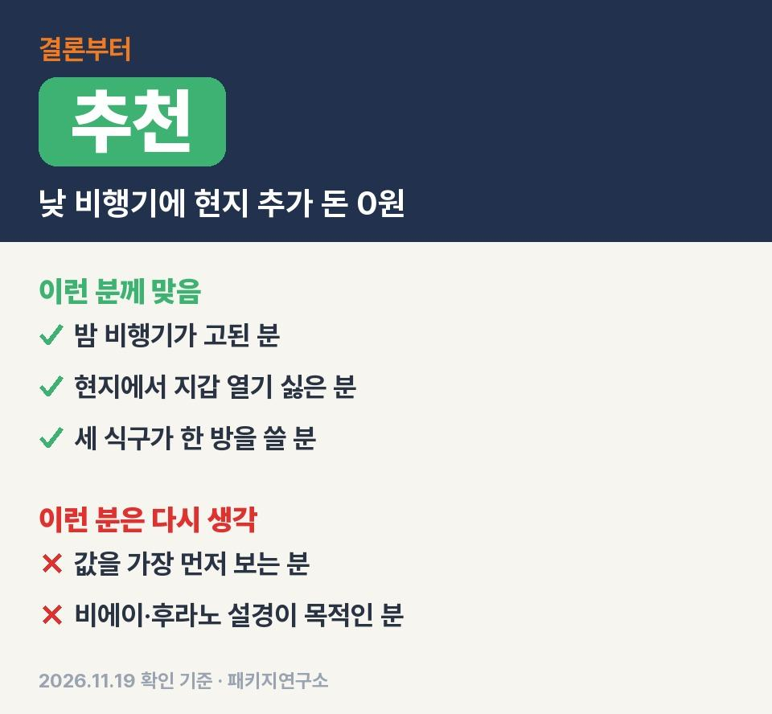
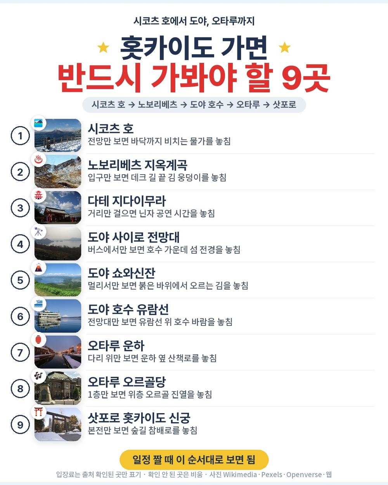
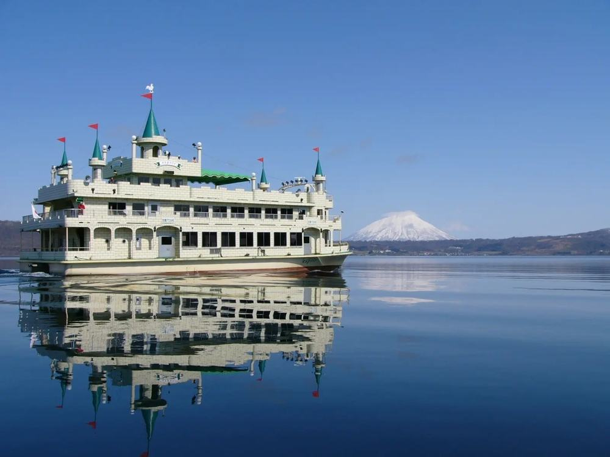
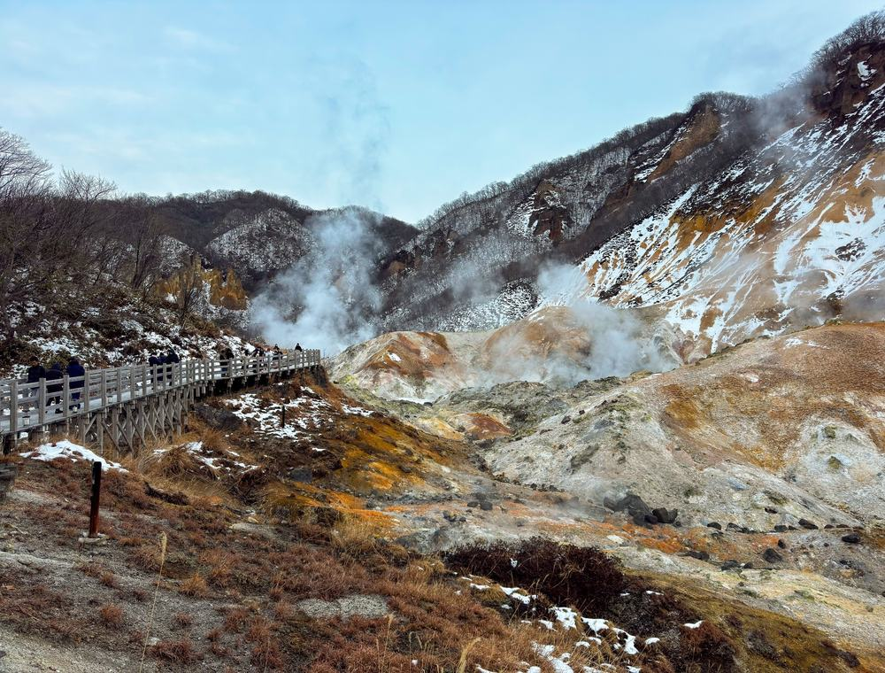
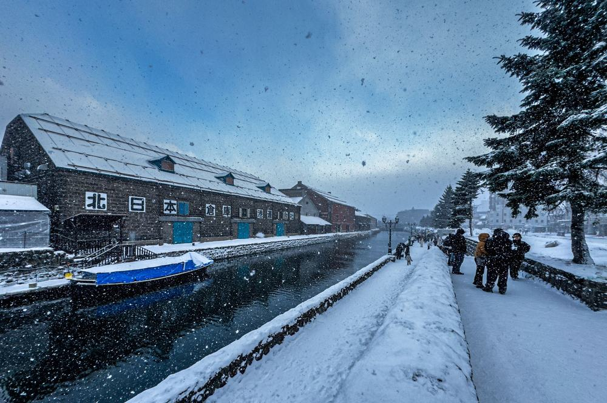

가이드·기사 경비가 상품가 안에 들어 있고 쇼핑센터·선택관광 칸이 둘 다 비어 있어서 현지에서 꼭 내야 할 돈이 사실상 없는 구성임.
직접 다녀온 후기가 아니라 하나투어 일정표와 포함·불포함 원문을 줄마다 따져 본 글임.
결론 — 추천. 에어프레미아 직항 낮 비행기 왕복, 온천호텔 2박 + 삿포로 1박, 식사 8번, 가이드·기사 경비까지 169만 9천원 안에 있고 쇼핑·선택관광은 0. 다만 값을 가장 먼저 보는 분은 다시 따져 볼 것.

오늘 기준 출발일별 요금 보기
https://naver.me/FQuv6vjw

| 항목 | 내용 |
|---|---|
| 가격 | 1인 1,699,000원 (성인·소아 같음 · 12월 출발 기준) · 2인 3,398,000원 |
| 여행사 | 하나투어 |
| 항공 | 에어프레미아 직항 (YP0751·YP0752) · 갈 때 09:40 출발 약 2시간 40분 / 올 때 13:45 출발 약 3시간 30분 · 기내식 유료 |
| 숙소 | 노보리베츠 온천 1박 + 기타유자와 온천 1박(하나투어 단독) + 삿포로 시내 1박 · 「또는 동급」 · 전 일정 3인실 가능 |
| 일정 | 3박 4일 · 식사 8번 · 쇼핑 0 · 선택관광 0 · 가이드·기사 경비 포함 |
▶ 내 출발일 오늘 기준 요금 확인 (제휴 링크 · 예약 시 수수료를 받으며 가격은 같습니다)
▶ 11월 19일 기준 북해도 패키지 최저 99만 9천원부터 — 출발일별 값 한 화면에: 비교 페이지
| 번호 | 내용 | 한 줄 답 |
|---|---|---|
| 1 | 이 값에 들어 있는 것 | 경비·입장료까지 |
| 2 | 현장에서 더 낼 돈 | 필수 0원 |
| 3 | 일정과 체력 | 버스 최장 2시간 30분 |
| 4 | 자유여행으로 짜면 | 항공값 조회 실패 |
| 5 | 맞는 분 · 안 맞는 분 | 3 대 3 |
항공·호텔·식사에 가이드 경비와 입장료, 간식 특전 세 가지까지 한 값으로 묶여 있음.
- 항공: 에어프레미아 인천–신치토세 직항 왕복, 공항세·유류할증료 포함
- 숙소: 노보리베츠 온천호텔(일정표상 호텔 마호로바) 1박, 기타유자와 모리노소라니와 1박, 프리미어 호텔 츠바키 삿포로 1박
- 식사: 8번 — 호텔 조식 3, 호텔 석식 2(하루는 뷔페), 닭찜 우동, 스시 세트, 현지식 저녁 1
- 관광: 시코츠 호, 노보리베츠 지옥계곡, 다테 지다이무라, 사이로 전망대, 쇼와신잔, 도야 호수 유람선, 오타루 운하·오르골당, 홋카이도 신궁, 오도리 공원
- 특전: 이모모치(감자떡), Bocca 요구르트 1병, 따뜻한 커피나 코코아 1잔

상품명엔 「대게+샤브샤브 석식+주류(음료) 무제한」 이 적혀 있는데 어느 날 저녁인지는 일정표에 안 나옴. 3억원 여행자보험도 포함임. 값이 낮은 축은 아닌데 따로 계산할 칸이 거의 안 남는다는 게 이 상품 쪽 근거임.
반드시 내는 돈은 0원이고 첫날·마지막 날 점심 두 끼와 자율 매너팁 정도만 남음.
| 항목 | 금액 | 필수/선택 | 비고 |
|---|---|---|---|
| 가이드·기사 경비 | 0원 | — | 상품가에 포함 |
| 선택관광 | 0원 | — | 없음 |
| 1·4일차 점심 | 직접 | 선택 | 기내식 유료 · 공항에서 먹어도 됨 |
| 매너팁 | 직접 | 자율 | 원문 「지불 여부에 따른 불이익 없음」 |
| 합계 (2인 필수분) | 0원 | 상품가 2인 3,398,000원 별도 |
- 3일차 저녁 스스키노는 가이드 없이 자유롭게 다니는 시간이라 쓰는 만큼 나감
- 예약금은 1인 30만원을 먼저 내는 방식임
버스가 가장 긴 건 3일차 오타루행 약 2시간 30분이고 나머지 날은 2시간 안팎임.
| 일차 | 가는 곳 | 버스 | 걷기 | 점심 · 저녁 |
|---|---|---|---|---|
| DAY 1 | 인천 09:40 → 신치토세 → 시코츠 호 → 노보리베츠 온천 | 약 2시간 | 적음 | 없음 · 호텔식 |
| DAY 2 | 지옥계곡 · 지다이무라 → 사이로 전망대 · 쇼와신잔 · 도야 유람선 → 기타유자와 온천 | 약 2시간 | 보통 | 닭찜 우동 · 호텔 뷔페 |
| DAY 3 | 오타루 운하·오르골당 → 홋카이도 신궁 · 오도리 공원 → 삿포로 | 약 4시간 | 보통 | 스시 세트 · 현지식 |
| DAY 4 | 삿포로 → 신치토세 13:45 → 인천 17:15 | 약 30분 | 적음 | 없음 · 없음 |
- 지옥계곡엔 15분쯤 걷는 데크 길이 있고 겨울엔 미끄러울 수 있음
- 오타루 운하는 버스 주차 후 7~8분 걸어 들어감
- 시계탑은 내리지 않고 버스 창밖으로 지나며 봄

새벽에 일어나 공항 가는 날도, 자정 넘어 집에 오는 날도 없다는 게 이 일정에서 가장 편한 대목임. 무릎이 불편하면 지옥계곡 데크 길은 앞부분만 걷겠다고 가이드에게 미리 말해 두면 됨.
항공값을 오늘 조회하지 못해 합계는 안 냈고 직접 짤 때 따로 챙길 칸만 적음.
| 항목 | 금액 | 근거 |
|---|---|---|
| 인천–신치토세 직항 왕복 | 확인 못 함 | 2026-11-19 마이리얼트립 조회 실패 — 숫자를 지어내지 않음 |
| 온천호텔 2박 + 삿포로 1박 | 확인 못 함 | 날짜·호텔마다 다름 |
| 식사 | 따로 | 패키지는 8번 포함 |
| 공항 이동 | 따로 | 패키지는 전용 버스 포함 |
| 도야 유람선·입장료 | 따로 | 패키지는 포함 |
| 여행자보험 | 따로 | 패키지는 3억원 보험 포함 |
| 가이드 | — | 자유여행은 없음 |
- 시코츠 호·노보리베츠·도야·오타루는 대중교통으로 하루에 잇기 어려워 렌터카나 투어를 따로 구해야 함
- 12월 홋카이도 눈길 운전은 부담이 큼
- 실값은 날짜를 정한 뒤 견줘 보는 게 정확함

걸리는 건 값 자체와 비에이·후라노가 빠진 동선이고 누구에게만 문제인지 분명함.
| 맞는 분 | 안 맞는 분 |
|---|---|
| 새벽·밤 비행기가 고된 분 | 값을 가장 먼저 보는 분 |
| 현지에서 지갑 열기 싫은 분 | 비에이·후라노 설경이 목적인 분 |
| 세 식구가 한 방을 쓸 분 | 긴 버스가 아주 힘든 분 |
이 상품 게시판에는 아침저녁 온천으로 여독을 풀었다는 글이 여럿 보임. 일부 온천 숙소가 오래돼 보였다는 아쉬움도 있어서, 방보다 온천을 보고 고르는 상품이라고 생각하면 기대가 맞음.
Q. 북해도 패키지 가격은 이 상품이 얼마인가요?
A. 12월 출발 기준 1인 169만 9천원, 2인 339만 8천원. 출발일마다 값이 달라서 날짜별로 확인해야 함.
Q. 북해도 패키지 노쇼핑인가요?
A. 맞음. 원문에 단체 쇼핑센터는 들르지 않는다고 적혀 있고 선택관광도 없음.
Q. 가이드 경비는 현지에서 따로 내나요?
A. 안 냄. 가이드·기사 경비가 상품가 포함 사항에 들어 있음. 매너팁은 자율임.
낮 비행기와 온천 두 밤, 그리고 현지에서 더 계산할 게 없다는 점이 이 값의 이유임.
밤 비행기가 부담스러운 분이나 세 식구가 한 방으로 가려는 집에 특히 잘 맞음.
출발일에 따라 값이 달라서 가시려는 날짜 요금부터 확인하시면 됨.
오늘 기준 출발일별 요금 보기
https://naver.me/FQuv6vjw
이 글에는 네이버 제휴 링크가 포함되어 있으며, 링크를 통해 예약하시면 일정 수수료를 받습니다. 가격은 동일합니다. 가격과 구성은 2026년 11월 19일 확인 기준이며 출발일에 따라 달라질 수 있습니다.
▶ 이 상품, 영상으로 보기 (유튜브)
▶ 북해도 패키지 오늘 값 나란히 비교
▶ 같은 목적지 다른 여행사 패키지, 쇼핑·선택관광·가이드 경비까지 비교: pkg-lab.com
,_Noboribetsu_Onsen,_Hokkaido,_April_2023_02.jpg){kind=link}
.jpg){kind=link}